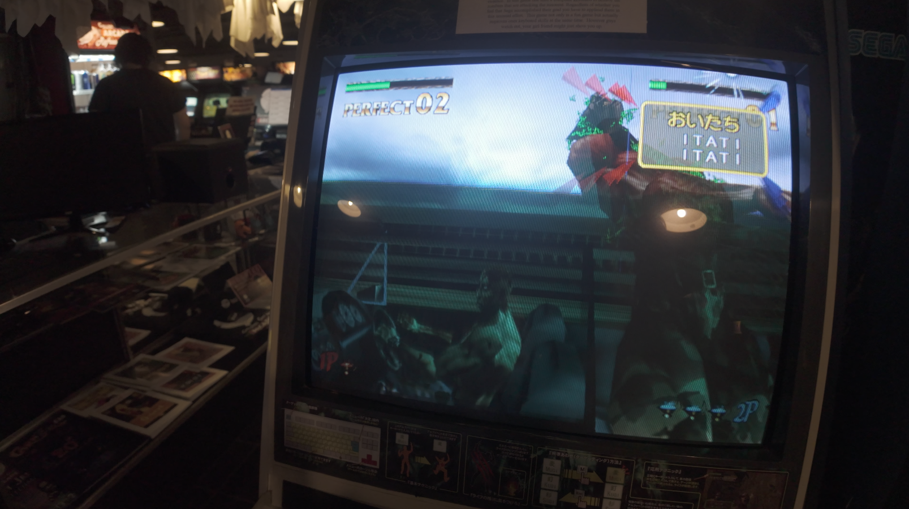
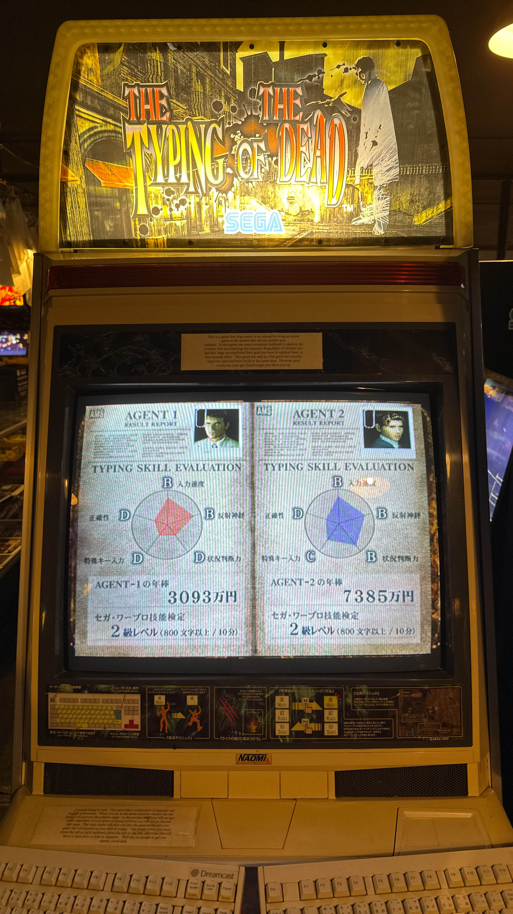
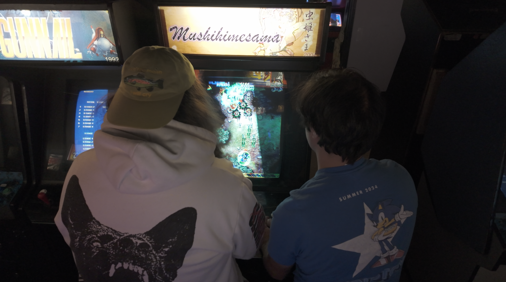

1game1week - Week 50 (12/18/25) - The Typing of the Dead Arcade / Mushihimesama
Hey all! It's week 50! (12/10 -> 12/17)
So... I skipped a week. It was a decision I made a little spur of the moment. To help visualize it, this is how it would have looked had I posted last week:
Wed 12/10 -> Week 50 (Start of the week)
Wed 12/17 -> Week 51 (Start)
Wed 12/24 -> Week 52 (Start)
Thurs 1/1 -> Week 1? (Start)
It's a little bit strange this way, however. These posts are geared towards, or at least I try to make them reflective of my thoughts AFTER finishing a game, not before.
I could say, "between 12/24 and 12/31, I have time to finish out a game", but that doesn't really fit saying "I beat a game for every week in 2026", does it?
As such: I skipped a week (aka the post on 12/10) to correct the schedule:
Week 12/17 -> Week 50 (End of the week, not the beginning)
Wed 12/24 -> Week 51 (End)
Wed 12/31 -> Week 52 (End) + Retrospective Year-In-Review Post
Thurs 1/8 -> Week 1 (End)
This way, I give myself some time to play after 2026 starts proper and I don't carry over any extra games played from 2025. It's a bit inconvenient, because I actually get a full week off from work between 12/25 and 1/1 so it'd be a prime opportunity to nolife some long games. But... oh well.
It feels a little bit like cheating because I'm effectively giving myself an "extra" week this year, since the schedule was supposed to end on 12/24, not 12/31. I think I prefer posts to be on the falling edge of the week though. It's just a one-time thing either way, so maybe it's not so bad? With a quick count, by making my first post of the year on 1/8, the 52nd will fall on 12/31/2026 again.
Hopefully this doesn't disqualify me from the Official(tm) and Totally Real(tm) Leaderboard(tm) of Epic(tm) 1g1w gamers(tm).
Anyways!
New games from 12/3 -> 12/9:
None! (Total 20)
New games from 12/10 -> 12/16:
ComicParty (PC)
Needy Streamer Overload (Switch), thank you very much for the gift Billy.
Currently, my backlog is at +7 (lower is better, +0 from last week).
And onto 1g1w. Once again, a game is considered "beaten" if I've accomplished the main objective of the game.
GAME: The Typing of the Dead / Mushihimesama
PLATFORM: Arcade
GENRE: Typing / Shoot-Em-Up
STARTED ON: 12/13
BEATEN ON: 12/13
TOTAL PLAYTIME: I dunno, maybe 45 minutes or so.
As a bit of context, this past weekend I went to Chicago to attend my friend Billy's bachelor party. We had a lot of fun with a bunch of our friends doing things like visiting game stores, breaking bread together, making fun of the horrid AirBnb we booked, singing Sonic songs in karaoke, suffering through American Mahjong...
And going to the Galloping Ghost arcade in Brookfield, IL, where today's games were played.
First, The Typing of the Dead is a spin-off of, you guessed it, House of the Dead. The premise is to type the phrases on screen to shoot your enemies. This was super cool, though, since the machine in Galloping Ghost is a Naomi machine in a candy cab, with the original Dreamcast keyboards. It was really impressive how good it looked.
It's not like Typing of the Dead really is anything all that special, nor is it really helping my backlog. I really wanted to make a post out of it because of how happy it made me to be able to share the experience with my friend, and felt that alone made it worth it for me to post about it in this platform.
We were actually playing in Japanese, too. It made typing a tiny bit difficult, but we did beat the game!


As for the second game, Mushihimesama, we spotted it while walking around the arcade. Since it's fairly short, we decided to just play the entirety of it. Thankfully we didn't really have to worry about quarters (freeplay), because we totally sucked at it.

Overall, I had a lot of fun at the arcade and even more because I was surrounded by friends. The entire weekend was unforgettable, going from karaoke, to game shops, to random bootleg stores in Chinatown, to my-mouth-is-watering-just-thinking-about-it deep dish pizza, to the comically bad AirBNB.
I don't really have too much to say because really, these games were really short.
Thanks for reading! If you need to contact me for any reason, please feel free to email me at aru@hoshikawa-aru.com.